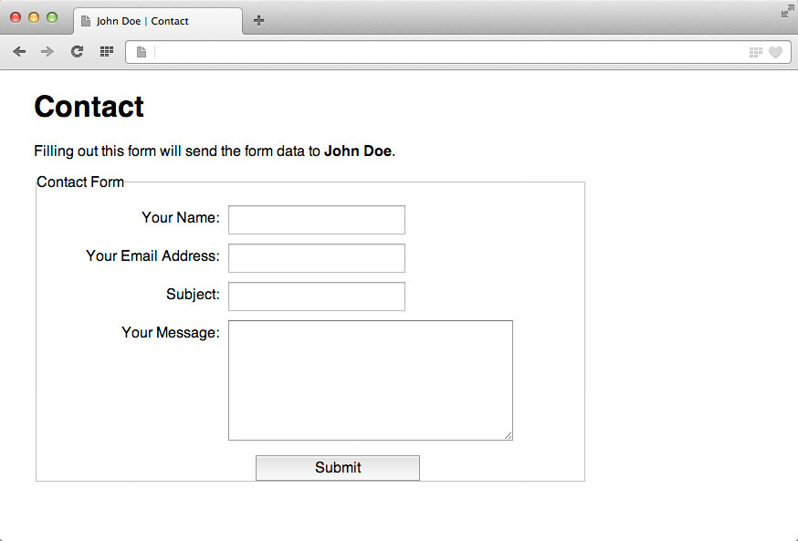

A contact form is an essential part of a site. It helps friends, customers, and others get in contact with you whether they're on their own computer or not. In this exercise, you'll implement a simple contact form, add a little bit of style.
To help people contact you when they visit your Web site.
You will create a contact form for you final site. While I don't expect you to know how to program PHP to make the form work, you are provided enough instruction to modify what is needed to make the form work.
While the form doesn't need to be completely stylized to the design of your final project at this point, we do want it to work. Make sure you upload the form to the server to test; submit a link (below) to your server once you've successfully tested
While the requirements are noted below, Download the detailed instructions of the assignment.
Here are some resources for styling forms
While you open the contact.html document in your browser—from your desktop—you cannot test to see if the contact form works. You must upload your contact folder to the web server so the contact_process.php document can process the form.
You are to:
While your contact form may appear differently, here is an example of a form styled using CSS.
